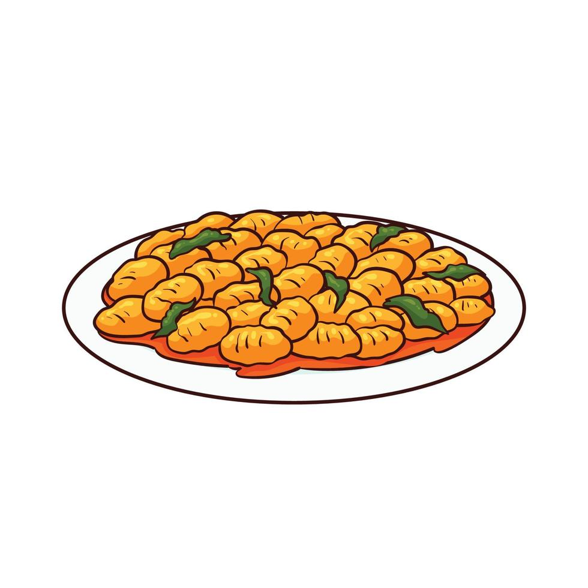

Odin Recipes
Navigation
Parmesan Gnocchi

Description
This is a recipe for Gnocchi which I found on the internet.
This is the third recipe I found on the internet for this project
Ingredients
- 300g gnochhi
- 2 tablespoons of unsalted butter
- 60g parmesan
- 2 tsp black pepper
Steps
- Cook the gnocchi and drain the water, and reserve 200ml of the cooking water
- Heat the butter in the frying pan and add the gnocchi, cheese and pepper, and 150ml of the cooking water
- Stir the gnocchi until it is coated. Pour in more of the reserved cooking water if you prefer more sauce
- Season to taste